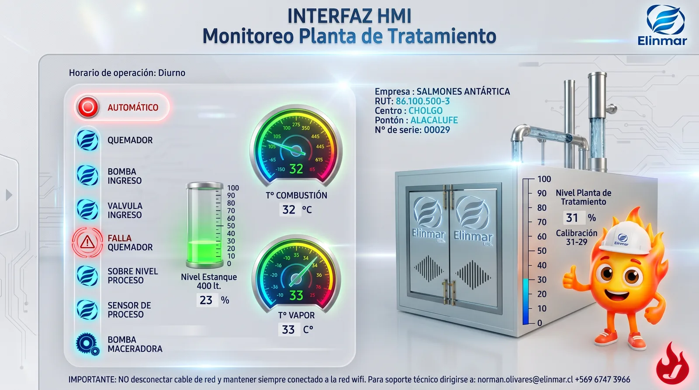

Sistema estanco oficial y certificado, marca Jema modelo JMWC60, diseñado y fabricado con altos estándares para procesar 50 litros por hora mediante vapor limpio y control automatizado.

Construcción íntegra en acero inoxidable AISI 316L, tableros de control y certificación legal para pontones en la zona austral.
Nuestra planta opera bajo un estricto ciclo térmico y biológico cerrado. Respaldada por la certificación de la marca Jema (Modelo JMWC60), garantiza el cumplimiento normativo exigido por la autoridad marítima y ambiental para pontones habitacionales.
Capacidad nominal para procesar 50 litros por hora de efluentes sanitarios con total eficiencia.
Inyección de vapor puro para la purificación de cámaras sin residuos químicos nocivos.
Panel táctil y autómatas para supervisión en tiempo real de niveles, temperaturas y alarmas.
Estándar oficial Jema JMWC60 respaldado por Elinmar Ltda. en maestranza y servicio.
Haz clic en cada paso para comprender el ciclo de tratamiento, destacando que ningún residuo sólido ingresa directamente a la máquina.
El operador puede supervisar en tiempo real todo el funcionamiento de la planta Jema JMWC60 directamente desde el escritorio de la oficina del pontón. El sistema permite controlar niveles de estanque, ciclos de temperatura, estado de quemadores y detección inmediata de cualquier falla o alarma sin necesidad de bajar a sala de máquinas.

Interfaz HMI · Monitoreo en vivo desde oficina